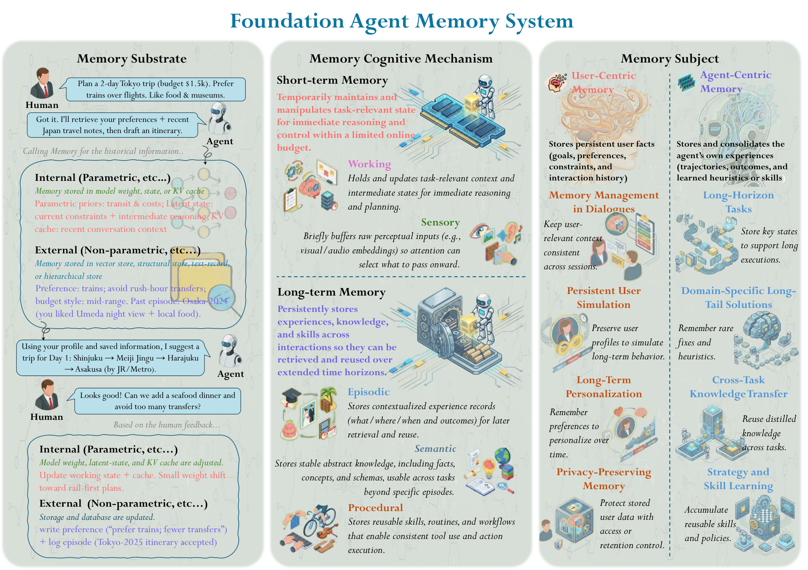
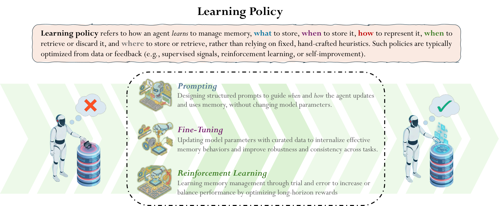

A Survey of Agent Memory in the Second Half: Towards Self-Evolving and Long-Horizon Agents
TL;DR
- arXiv 2602.06052 (Wei-Chieh Huang, Weizhi Zhang, and ~60 co-authors across UIC, UIUC, Harvard, UCSD, Salesforce — incl. Caiming Xiong — Google-affiliated researchers, and many others; accepted at TMLR with Survey Certification) organizes the entire agent-memory field along three orthogonal dimensions: memory substrate (where it lives), cognitive mechanism (what functional role it plays), and memory subject (who it serves — the user or the agent itself).
- Its most forward-looking claim: memory is shifting from a passive storage add-on to the substrate through which agents self-evolve — and "memory management itself is becoming a trainable capability," increasingly learned end-to-end with RL rather than hand-scripted.
- Beyond single-agent read/write, it maps multi-agent memory topologies (private / shared-workspace / hybrid / orchestrated), routing patterns, evaluation practice, and six open-challenge directions, making it the closest thing yet to a field-wide index for the memory work tracked in this list.
Why this matters
Context explosion is the operational wall every long-horizon agent hits: conversations, tool outputs, past decisions, and user preferences accumulate faster than any context window grows, and "put it all in context" scales quadratically in cost while degrading behavior. The memory papers tracked in this list attack slices of the problem — programmatic memory, probabilistic retrieval, memory-to-skill consolidation, plug-in fact/skill stores — but each invents its own vocabulary, which makes cross-paper comparison guesswork. This survey supplies the missing coordinate system. Its three-axis taxonomy answers, for any memory system: what substrate (vector index? text log? KV cache? weights?), what cognitive role (episodic? semantic? procedural?), and what subject (user personalization vs the agent's own experience). Two of its through-lines matter especially for this tracker's core interests. First, the agent-centric column — memory of the agent's own successes, failures, and extracted procedures — is precisely the raw material of self-evolving agents; the survey formalizes the store → distill → reuse loop that skill-evolution and experience-distillation papers implement ad hoc. Second, the argument that memory policies (what to retain, consolidate, discard) should be trained, not engineered, predicts where the field goes next: memory ops as actions in an RL problem.

Figure 2 from the paper: the taxonomy of Foundation Agent Memory — substrates split into internal (weights, latent states, KV cache) and external (vector index, text record, structural and hierarchical stores); cognitive mechanisms spanning sensory, working, episodic, semantic, and procedural memory; subjects split into user-centric and agent-centric.The core idea
Stop treating "agent memory" as one thing. Any memory design decomposes along three independent axes:
Axis 1 — Substrate (where). External: vector indexes (approximate nearest-neighbor top-k retrieval), text records (human-readable summaries and episodic logs), structural stores (tables, graphs, trees), and hierarchical stores with dedicated modules (core / episodic / semantic / procedural / resource). Internal: model weights (pre-training, post-training, targeted editing), latent states carried across steps, and the KV cache. Internal is fast and implicit but hard to audit or edit; external is inspectable and updatable but pays retrieval latency and relevance risk.
Axis 2 — Cognitive mechanism (what role). Borrowing the psychology ladder: sensory memory (brief retention of raw recent inputs), working memory (active manipulation under capacity constraints — effectively the context window), episodic memory (persistent cross-session experience), semantic memory (abstract facts and structured knowledge), and procedural memory (reusable how-to patterns — the "skills" of this tracker's vocabulary).
Axis 3 — Subject (for whom). User-centric memory serves personalization — preferences, history, standing instructions. Agent-centric memory serves the agent's own improvement — trajectories, errors, and lessons distilled from them. The survey's title thesis is that the field's "second half" is the agent-centric column: memory as the mechanism by which an agent executes a task, stores the experience, extracts knowledge or skill from it, and reuses it — the self-evolution loop.
The survey presents this framework narratively; as a reconstructed formalization (mine, not the paper's): an agent policy \( \pi \) acts given observations and a memory state \( m_t \), while memory operations close the loop,
where \( R \) is a read/retrieval operator over the store given query \( q_t \), and \( U \) the write/update operator — the design space above is choices of representation for \( m \), and implementations of \( R \) and \( U \).
How it works
Single-agent memory operations. The survey catalogs five operation families: storage & indexing; loading & retrieval; update & refresh; compression & summarization; forgetting & retention. The useful reframing is lifecycle-shaped — every system answers the same questions in some order:
# The agent-memory lifecycle (distilled from the survey's operations section)
loop over agent steps / sessions:
perceive: o_t arrives (sensory buffer, mostly transient)
work: assemble working memory = context window
<- retrieval R(m, q): vector top-k | text scan | graph traversal
act: a_t from policy given working memory
write: U(m, o_t, a_t): store episode (episodic),
extract facts (semantic), extract procedures (procedural)
manage (online or offline/idle):
consolidate: merge duplicates, resolve contradictions
compress: summarize old episodes; check for information loss
forget: decay / evict by relevance, age, capacity
promote: episodic -> semantic/procedural (experience -> knowledge/skill)
evolve: reuse promoted skills next episode # the agent-centric loop
Multi-agent memory. Four architectures — private-only (isolated per agent), shared-workspace (common pool), hybrid, and orchestrated (centrally managed) — crossed with three routing patterns: orchestrator-based, agent-initiated, and memory-driven (access triggered by memory state itself). The failure modes the survey highlights are write contention and inconsistency, handled by write control and consistency feedback loops.
Trainable memory management. The section most aligned with this tracker: instead of hand-scripted heuristics, "agents are trained end-to-end, typically via reinforcement learning, to decide what to retain, consolidate, or discard." Three levels: step-level decisions (per-step memory ops as actions), trajectory-level representation (learning which episodes matter), and cross-episode / multi-agent memory RL. The implicit claim is that retention/eviction/consolidation policies are credit-assignment problems — the reward for a good write may arrive many episodes later.
Evaluation. Metrics split into accuracy-based (factual correctness, task completion), similarity-based, and LLM-as-a-judge; benchmarks split along the subject axis into user-centric (personalization, preference recall) and agent-centric (task learning, experience accumulation). The survey reads the current benchmark landscape as skewed toward user-centric recall, with agent-centric experience-reuse evaluation still immature (inferred from the section's framing — verify against Section 7).

Figure from the paper's trainable-memory section: memory management framed as a learned policy — step-level retain/discard decisions, trajectory-level representation learning, and cross-episode settings trained with reinforcement learning rather than hand-written rules.Results
Surveys don't have experiments, but this one contributes three artifacts worth keeping. (1) The map itself: a timeline of memory frameworks 2023–2025 categorized by substrate and subject (Figure 1), and a cumulative publication count (Figure 3) showing rapid acceleration through 2025 — evidence the fragmentation problem is real and growing. (2) The cross-axis placement of existing systems: hierarchical stores with core/episodic/semantic/procedural modules turn out to be the convergent design among recent agent frameworks, which the taxonomy explains as covering multiple cognitive mechanisms in one substrate. (3) The open-challenge list, six directions: continual learning and self-evolving agents; multi-human/multi-agent memory organization; memory infrastructure and efficiency; lifelong personalization with trustworthy (privacy-preserving, verifiable) memory; memory for multimodal/embodied/world-model agents; and real-world benchmarking beyond static recall tasks. TMLR's Survey Certification and the ~60-author breadth make it a reasonable canonical reference for the field's state as of early 2026.
How it connects
- Long-horizon agents survey (tracked, self-improving): that survey organizes the optimization side (harness × training co-evolution); this one organizes the state side. Together they cover the two halves of self-evolving systems: what improves, and what persists.
- MSCE memory-to-skills and agent-memory-distillation (tracked): both are instances of the survey's episodic → procedural promotion path — the survey gives the operation a name and situates it as one cell in the lifecycle, alongside consolidation and forgetting.
- PlugMem, DocMemo, Pro-Long (tracked, memory-context): all three are substrate innovations (fact/skill records, probabilistic retrieval, programmatic memory) that the taxonomy would classify as external stores with different cognitive-mechanism coverage; the survey's axes make explicit what each does not handle.
- LOPD (2608.13040, tutorial in this list, added the same day): the survey says memory management is becoming trainable; LOPD is the sharpest instance — experience retrieval and compression trained end-to-end by a distillation objective, with the memory consumed at training time and internalized into weights.
Critical take
As a map, this is the best available; as science, it inherits the survey genre's weaknesses. The three-axis taxonomy is genuinely clarifying, but the cognitive-psychology labels (sensory/working/episodic/semantic/procedural) are an analogy, not a mechanism — nothing in a vector store enforces episodic semantics, and porting the vocabulary can suggest more theoretical grounding than exists. The "memory as the substrate of self-evolution" thesis is directionally right but stated more confidently than the cited evidence supports: the field's demonstrations of experience-driven improvement are mostly the small-scale, benchmark-specific systems this tracker follows, several of which (see the rethinking-self-evolving-skills tutorial, added today) look like sparse validation-filtered search rather than reliable compounding. The trainable-memory section, the part I care most about, is also the thinnest — a three-level categorization of early work rather than a settled recipe, with the hard problem (long-horizon credit assignment for write/evict decisions) named but not solved. And any survey finalized in this field in early 2026 (v1 January, v4 August) starts aging immediately. Use it as an index and a shared vocabulary; don't mistake taxonomy coverage for solved problems.
If you remember three things
- Classify any memory system by three independent axes — substrate (internal: weights/latent/KV vs external: vector/text/structural/hierarchical), cognitive mechanism (sensory → working → episodic → semantic → procedural), and subject (user-centric vs agent-centric) — and cross-paper comparisons become tractable.
- The "second half" of agent memory is agent-centric: store the experience, distill knowledge/skill from it, reuse it — memory is the persistence layer that turns isolated episodes into self-evolution.
- Memory management is becoming a trainable capability: retain/consolidate/discard as RL decisions at step, trajectory, and cross-episode levels — hand-tuned retrieval heuristics are the part of today's stacks most likely to be learned away.